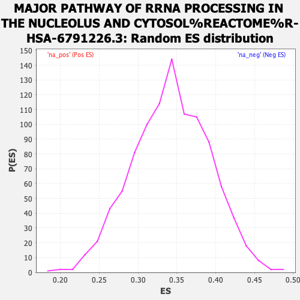

| | | Dataset | expr_RNAseq_ranks |
| Phenotype | NoPhenotypeAvailable |
| Upregulated in class | na_neg |
| GeneSet | MAJOR PATHWAY OF RRNA PROCESSING IN THE NUCLEOLUS AND CYTOSOL%REACTOME%R-HSA-6791226.3 |
| Enrichment Score (ES) | -0.46388245 |
| Normalized Enrichment Score (NES) | NaN |
| Nominal p-value | NaN |
| FDR q-value | 1.0 |
| FWER p-Value | 0.0 |
Table: GSEA Results Summary
 Fig 1: Enrichment plot: MAJOR PATHWAY OF RRNA PROCESSING IN THE NUCLEOLUS AND CYTOSOL%REACTOME%R-HSA-6791226.3
Fig 1: Enrichment plot: MAJOR PATHWAY OF RRNA PROCESSING IN THE NUCLEOLUS AND CYTOSOL%REACTOME%R-HSA-6791226.3
Profile of the Running ES Score & Positions of GeneSet Members on the Rank Ordered List
| PROBE | GENE SYMBOL | GENE_TITLE | RANK IN GENE LIST | RANK METRIC SCORE | RUNNING ES | CORE ENRICHMENT | | 1 | NOL9 | | | 1296 | 3.727 | -0.0467 | No |
| 2 | RPL3 | | | 1535 | 3.437 | -0.0410 | No |
| 3 | EXOSC10 | | | 1660 | 3.305 | -0.0302 | No |
| 4 | LAS1L | | | 1689 | 3.279 | -0.0146 | No |
| 5 | WDR46 | | | 1869 | 3.105 | -0.0076 | No |
| 6 | NOP56 | | | 2178 | 2.863 | -0.0085 | No |
| 7 | ISG20L2 | | | 2467 | 2.655 | -0.0094 | No |
| 8 | PES1 | | | 3289 | 2.183 | -0.0399 | No |
| 9 | PWP2 | | | 4338 | 1.715 | -0.0844 | No |
| 10 | NOL6 | | | 4370 | 1.702 | -0.0771 | No |
| 11 | SENP3 | | | 4396 | 1.690 | -0.0696 | No |
| 12 | RIOK1 | | | 4703 | 1.578 | -0.0770 | No |
| 13 | NOB1 | | | 4785 | 1.550 | -0.0731 | No |
| 14 | RBM28 | | | 4892 | 1.511 | -0.0707 | No |
| 15 | DDX47 | | | 5261 | 1.383 | -0.0823 | No |
| 16 | RPL36A | | | 5569 | 1.296 | -0.0912 | No |
| 17 | RRP1 | | | 5691 | 1.256 | -0.0908 | No |
| 18 | TBL3 | | | 5736 | 1.243 | -0.0866 | No |
| 19 | DHX37 | | | 5862 | 1.205 | -0.0868 | No |
| 20 | RCL1 | | | 6001 | 1.165 | -0.0878 | No |
| 21 | RPL10 | | | 6004 | 1.164 | -0.0818 | No |
| 22 | UTP11L | | | 6100 | 1.139 | -0.0808 | No |
| 23 | FTSJ3 | | | 6424 | 1.051 | -0.0918 | No |
| 24 | EXOSC3 | | | 6583 | 1.013 | -0.0946 | No |
| 25 | UTP14A | | | 6597 | 1.011 | -0.0900 | No |
| 26 | EXOSC5 | | | 6636 | 1.003 | -0.0867 | No |
| 27 | IMP3 | | | 6950 | 0.930 | -0.0978 | No |
| 28 | PDCD11 | | | 6989 | 0.924 | -0.0950 | No |
| 29 | XRN2 | | | 7651 | 0.777 | -0.1246 | No |
| 30 | WDR3 | | | 8025 | 0.693 | -0.1400 | No |
| 31 | EXOSC2 | | | 8337 | 0.633 | -0.1526 | No |
| 32 | WDR18 | | | 8492 | 0.598 | -0.1573 | No |
| 33 | CSNK1D | | | 8566 | 0.584 | -0.1580 | No |
| 34 | NOC4L | | | 8682 | 0.566 | -0.1609 | No |
| 35 | NOP14 | | | 8992 | 0.513 | -0.1740 | No |
| 36 | RPS9 | | | 9043 | 0.501 | -0.1740 | No |
| 37 | BYSL | | | 9100 | 0.492 | -0.1743 | No |
| 38 | BOP1 | | | 9529 | 0.417 | -0.1939 | No |
| 39 | RPP14 | | | 9642 | 0.401 | -0.1975 | No |
| 40 | NOP58 | | | 9759 | 0.383 | -0.2014 | No |
| 41 | RPL13 | | | 9807 | 0.377 | -0.2019 | No |
| 42 | GNL3 | | | 10643 | 0.254 | -0.2431 | No |
| 43 | TEX10 | | | 10650 | 0.254 | -0.2421 | No |
| 44 | DDX49 | | | 10897 | 0.221 | -0.2535 | No |
| 45 | RPL13A | | | 10997 | 0.208 | -0.2574 | No |
| 46 | TSR1 | | | 10999 | 0.208 | -0.2564 | No |
| 47 | BMS1 | | | 11279 | 0.172 | -0.2697 | No |
| 48 | PNO1 | | | 11344 | 0.165 | -0.2721 | No |
| 49 | IMP4 | | | 11417 | 0.156 | -0.2750 | No |
| 50 | EXOSC4 | | | 11419 | 0.155 | -0.2742 | No |
| 51 | RPS3 | | | 11435 | 0.153 | -0.2742 | No |
| 52 | RRP9 | | | 11619 | 0.127 | -0.2829 | No |
| 53 | RPL7 | | | 11631 | 0.126 | -0.2828 | No |
| 54 | HEATR1 | | | 11752 | 0.108 | -0.2883 | No |
| 55 | WDR12 | | | 11767 | 0.107 | -0.2885 | No |
| 56 | RPL10A | | | 11800 | 0.103 | -0.2896 | No |
| 57 | NIP7 | | | 11872 | 0.096 | -0.2927 | No |
| 58 | UTP6 | | | 11951 | 0.084 | -0.2962 | No |
| 59 | UTP14C | | | 12143 | 0.061 | -0.3056 | No |
| 60 | CSNK1E | | | 12145 | 0.061 | -0.3054 | No |
| 61 | RPS6 | | | 12469 | 0.027 | -0.3217 | No |
| 62 | WBSCR22 | | | 12529 | 0.022 | -0.3246 | No |
| 63 | RPL9 | | | 12559 | 0.020 | -0.3260 | No |
| 64 | EMG1 | | | 12587 | 0.017 | -0.3272 | No |
| 65 | RPL8 | | | 12680 | 0.008 | -0.3319 | No |
| 66 | CIRH1A | | | 12799 | -0.004 | -0.3379 | No |
| 67 | RIOK3 | | | 13045 | -0.033 | -0.3502 | No |
| 68 | RPL18 | | | 13080 | -0.036 | -0.3517 | No |
| 69 | NCL | | | 13103 | -0.038 | -0.3526 | No |
| 70 | FCF1 | | | 13195 | -0.047 | -0.3570 | No |
| 71 | NOL11 | | | 13419 | -0.073 | -0.3680 | No |
| 72 | RPL15 | | | 13425 | -0.073 | -0.3679 | No |
| 73 | RPLP0 | | | 13643 | -0.101 | -0.3784 | No |
| 74 | UTP20 | | | 13843 | -0.128 | -0.3879 | No |
| 75 | RPLP1 | | | 13913 | -0.138 | -0.3907 | No |
| 76 | RPL7A | | | 14308 | -0.197 | -0.4097 | No |
| 77 | RRP7A | | | 14325 | -0.200 | -0.4095 | No |
| 78 | MPHOSPH10 | | | 14716 | -0.269 | -0.4280 | No |
| 79 | FBL | | | 14732 | -0.273 | -0.4273 | No |
| 80 | RPL41 | | | 14738 | -0.273 | -0.4262 | No |
| 81 | LTV1 | | | 14786 | -0.283 | -0.4271 | No |
| 82 | NOL12 | | | 15142 | -0.348 | -0.4434 | No |
| 83 | RPS25 | | | 15220 | -0.365 | -0.4454 | No |
| 84 | RPS18 | | | 15231 | -0.368 | -0.4440 | No |
| 85 | RPS3A | | | 15277 | -0.377 | -0.4443 | No |
| 86 | RPL36 | | | 15410 | -0.405 | -0.4490 | No |
| 87 | RPL18A | | | 15418 | -0.407 | -0.4472 | No |
| 88 | WDR43 | | | 15499 | -0.427 | -0.4491 | No |
| 89 | WDR75 | | | 15675 | -0.470 | -0.4555 | No |
| 90 | RPL34 | | | 15754 | -0.486 | -0.4570 | No |
| 91 | RPS14 | | | 15804 | -0.500 | -0.4569 | No |
| 92 | ERI1 | | | 15942 | -0.535 | -0.4611 | Yes |
| 93 | RPL21 | | | 15961 | -0.541 | -0.4592 | Yes |
| 94 | RPL39L | | | 15972 | -0.544 | -0.4569 | Yes |
| 95 | EXOSC7 | | | 16007 | -0.554 | -0.4558 | Yes |
| 96 | RPL4 | | | 16014 | -0.557 | -0.4532 | Yes |
| 97 | RPS10 | | | 16035 | -0.562 | -0.4513 | Yes |
| 98 | RPL24 | | | 16175 | -0.600 | -0.4553 | Yes |
| 99 | DDX52 | | | 16216 | -0.611 | -0.4541 | Yes |
| 100 | RPS27A | | | 16231 | -0.616 | -0.4517 | Yes |
| 101 | RPL27A | | | 16319 | -0.643 | -0.4528 | Yes |
| 102 | RPL5 | | | 16370 | -0.659 | -0.4519 | Yes |
| 103 | DCAF13 | | | 16371 | -0.659 | -0.4485 | Yes |
| 104 | EBNA1BP2 | | | 16462 | -0.682 | -0.4495 | Yes |
| 105 | DIEXF | | | 16533 | -0.712 | -0.4494 | Yes |
| 106 | RPS5 | | | 16542 | -0.717 | -0.4461 | Yes |
| 107 | RPP25 | | | 16632 | -0.742 | -0.4468 | Yes |
| 108 | WDR36 | | | 16648 | -0.748 | -0.4437 | Yes |
| 109 | RPS17 | | | 16729 | -0.770 | -0.4437 | Yes |
| 110 | PELP1 | | | 16777 | -0.787 | -0.4421 | Yes |
| 111 | RPS4X | | | 16796 | -0.795 | -0.4389 | Yes |
| 112 | RPL17 | | | 16874 | -0.819 | -0.4385 | Yes |
| 113 | EXOSC9 | | | 17075 | -0.891 | -0.4441 | Yes |
| 114 | RPS19 | | | 17142 | -0.920 | -0.4427 | Yes |
| 115 | RPL29 | | | 17188 | -0.940 | -0.4401 | Yes |
| 116 | RPS20 | | | 17194 | -0.941 | -0.4355 | Yes |
| 117 | RPS8 | | | 17221 | -0.951 | -0.4319 | Yes |
| 118 | RPL12 | | | 17236 | -0.962 | -0.4276 | Yes |
| 119 | RPL23A | | | 17311 | -0.992 | -0.4263 | Yes |
| 120 | EXOSC1 | | | 17341 | -1.001 | -0.4225 | Yes |
| 121 | RPS29 | | | 17347 | -1.003 | -0.4176 | Yes |
| 122 | RPS16 | | | 17365 | -1.013 | -0.4132 | Yes |
| 123 | RPP30 | | | 17447 | -1.050 | -0.4119 | Yes |
| 124 | RPL30 | | | 17564 | -1.107 | -0.4121 | Yes |
| 125 | RPL31 | | | 17582 | -1.119 | -0.4071 | Yes |
| 126 | RPL23 | | | 17622 | -1.139 | -0.4032 | Yes |
| 127 | RPL27 | | | 17634 | -1.146 | -0.3979 | Yes |
| 128 | EXOSC8 | | | 17644 | -1.151 | -0.3923 | Yes |
| 129 | RPL28 | | | 17687 | -1.174 | -0.3884 | Yes |
| 130 | DIS3 | | | 17767 | -1.214 | -0.3861 | Yes |
| 131 | RPS27 | | | 17807 | -1.237 | -0.3817 | Yes |
| 132 | RPL32 | | | 17831 | -1.254 | -0.3764 | Yes |
| 133 | RPL19 | | | 17901 | -1.290 | -0.3732 | Yes |
| 134 | RIOK2 | | | 17912 | -1.299 | -0.3670 | Yes |
| 135 | RRP36 | | | 17918 | -1.302 | -0.3605 | Yes |
| 136 | C1D | | | 17936 | -1.311 | -0.3546 | Yes |
| 137 | RPLP2 | | | 17972 | -1.333 | -0.3494 | Yes |
| 138 | RPS12 | | | 17973 | -1.333 | -0.3425 | Yes |
| 139 | RPSA | | | 18005 | -1.357 | -0.3371 | Yes |
| 140 | KRR1 | | | 18024 | -1.364 | -0.3309 | Yes |
| 141 | RPL35A | | | 18061 | -1.385 | -0.3256 | Yes |
| 142 | RPL22 | | | 18146 | -1.446 | -0.3224 | Yes |
| 143 | RPP40 | | | 18174 | -1.463 | -0.3162 | Yes |
| 144 | UTP18 | | | 18197 | -1.481 | -0.3096 | Yes |
| 145 | RPS26 | | | 18225 | -1.494 | -0.3032 | Yes |
| 146 | RPS11 | | | 18232 | -1.499 | -0.2958 | Yes |
| 147 | DDX21 | | | 18236 | -1.501 | -0.2882 | Yes |
| 148 | RPL11 | | | 18242 | -1.507 | -0.2806 | Yes |
| 149 | EXOSC6 | | | 18255 | -1.514 | -0.2734 | Yes |
| 150 | UTP3 | | | 18270 | -1.524 | -0.2662 | Yes |
| 151 | RPL35 | | | 18311 | -1.558 | -0.2602 | Yes |
| 152 | MPHOSPH6 | | | 18314 | -1.558 | -0.2522 | Yes |
| 153 | RPS28 | | | 18386 | -1.609 | -0.2475 | Yes |
| 154 | SKIV2L2 | | | 18387 | -1.610 | -0.2391 | Yes |
| 155 | RPL26 | | | 18475 | -1.705 | -0.2347 | Yes |
| 156 | RPS15 | | | 18491 | -1.714 | -0.2266 | Yes |
| 157 | RPS13 | | | 18600 | -1.811 | -0.2227 | Yes |
| 158 | RPS24 | | | 18655 | -1.870 | -0.2158 | Yes |
| 159 | RPL39 | | | 18701 | -1.913 | -0.2082 | Yes |
| 160 | RPS21 | | | 18757 | -1.972 | -0.2007 | Yes |
| 161 | RPS15A | | | 18767 | -1.977 | -0.1910 | Yes |
| 162 | RPP38 | | | 18780 | -1.997 | -0.1812 | Yes |
| 163 | RPL22L1 | | | 18786 | -2.006 | -0.1711 | Yes |
| 164 | RPL14 | | | 18791 | -2.014 | -0.1608 | Yes |
| 165 | RPL6 | | | 18820 | -2.038 | -0.1517 | Yes |
| 166 | RPL37A | | | 18874 | -2.103 | -0.1435 | Yes |
| 167 | RPS23 | | | 18945 | -2.199 | -0.1357 | Yes |
| 168 | UBA52 | | | 18984 | -2.251 | -0.1259 | Yes |
| 169 | RPS7 | | | 19009 | -2.291 | -0.1153 | Yes |
| 170 | RPL37 | | | 19073 | -2.377 | -0.1062 | Yes |
| 171 | NHP2L1 | | | 19131 | -2.460 | -0.0963 | Yes |
| 172 | UTP15 | | | 19287 | -2.775 | -0.0899 | Yes |
| 173 | RPS27L | | | 19375 | -2.953 | -0.0790 | Yes |
| 174 | FAU | | | 19474 | -3.234 | -0.0672 | Yes |
| 175 | RPL38 | | | 19509 | -3.325 | -0.0517 | Yes |
| 176 | RPS2 | | | 19604 | -3.723 | -0.0372 | Yes |
| 177 | RPL36AL | | | 19688 | -4.213 | -0.0196 | Yes |
| 178 | RPL26L1 | | | 19766 | -5.011 | 0.0024 | Yes |
Table: GSEA details [plain text format]

Fig 2: MAJOR PATHWAY OF RRNA PROCESSING IN THE NUCLEOLUS AND CYTOSOL%REACTOME%R-HSA-6791226.3: Random ES distribution
Gene set null distribution of ES for MAJOR PATHWAY OF RRNA PROCESSING IN THE NUCLEOLUS AND CYTOSOL%REACTOME%R-HSA-6791226.3